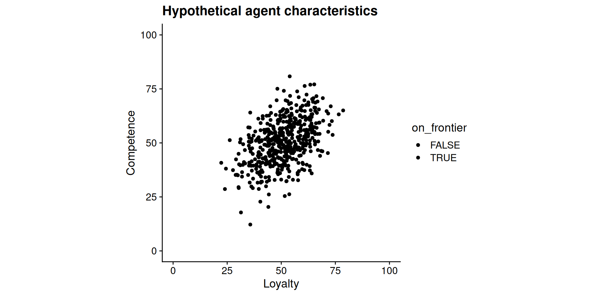
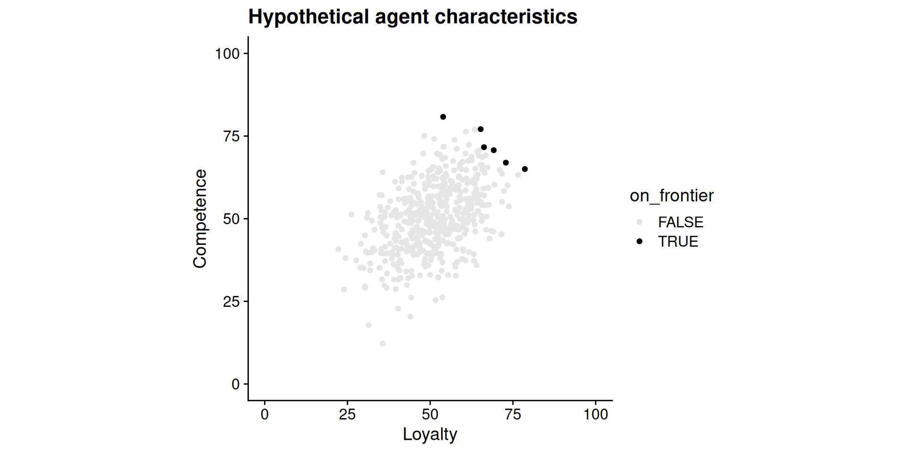
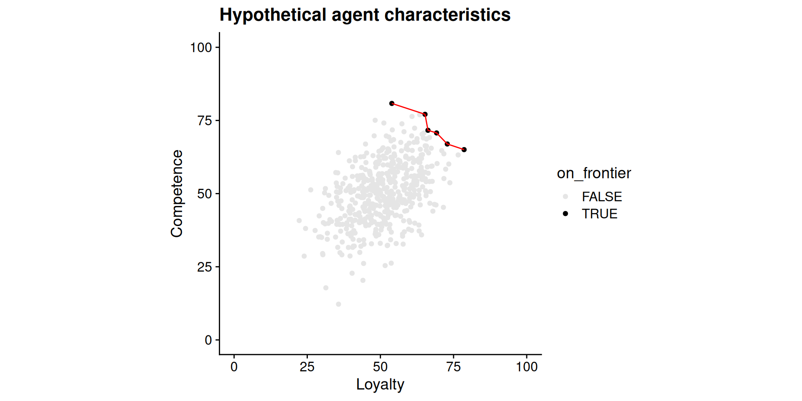
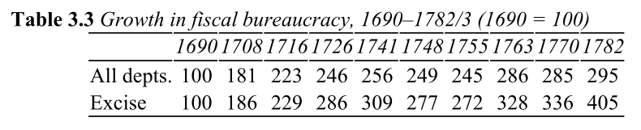
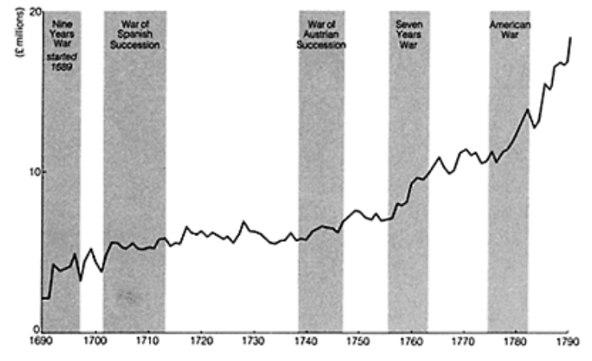
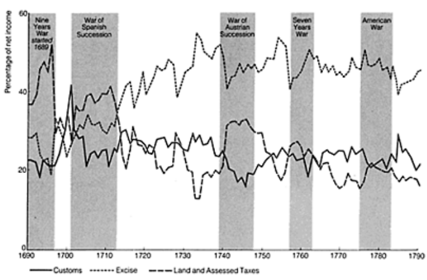

PSCI 2227: War and State Development
April 13, 2026
Course evaluations: https://my-vanderbilt.bluera.com/
My goal: No less than 20 completed, ideally 25+
Extra credit scheme: Everyone gets extra points depending on response rate
| Responses | Final grade bump |
|---|---|
| 0–19 | none |
| 20 | +0.50 |
| 21 | +0.55 |
| 22 | +0.60 |
| 23 | +0.65 |
| 24 | +0.70 |
| 25+ | +0.75 |
Inspired by a similar scheme developed by Prof. Emily Ritter.
Also see Myatt and Wallace, The Economic Journal 2009, “Evolution, Teamwork, and Collective Action.”
Before grading: All I see is how many have been filled out
After final grades are submitted: I see the anonymized content of the evaluations
What I never see:
Last time (Apr 1). Darden and Mylonas on linguistic commonality.
Today. Brewer, The Sinews of Power, chapters 3–4.
When one person (the principal) delegates a task to another (the agent)
e.g., the king sets the tax rate, but other people go out and collect the money
Why delegate instead of doing it yourself?
Agents don’t always behave as the principal wishes
Two qualities a principal wants from an agent:
But the most loyal agent is typically not the most competent
Discussion question
What’s a time in your own life where you’ve needed to select an “agent” but faced a loyalty-competence tradeoff? What factors led you to seek loyalty over competence, or vice versa?
Problem arises even if more loyal agents are generally more competent

Problem arises even if more loyal agents are generally more competent

Problem arises even if more loyal agents are generally more competent

Same principal, different points on the loyalty-competence frontier
What political and institutional factors shape a ruler’s relative preference for more loyalty as opposed to more competence?
Some possibilities:
Max Weber (remember him!?) laid out the ideal-type bureaucracy:
“Bureaucracy” in this sense isn’t just red tape
Administration as more systematic, less idiosyncratic
Why is bureaucracy an answer to the agency problems we’ve been discussing?
Bureaucracy makes the loyalty-competence tradeoff less severe
England in the mid-1600s: a remarkably small government
Key features of this system:
The agency costs of tax farming:
Was supplanted by Weberian administration starting in late 1600s
Many wars with France in the 1600s–1700s
Financing these required much more revenue than old system could deliver

Early on (1690s–1710s): rulers still prioritized loyalty
Gradual shift toward retaining competent officials regardless of party
The Excise: an indirect commodity tax on domestically produced goods — beer, spirits, soap, candles, leather, paper, and more
Brewer identifies the Excise Office as the closest approximation to Weber’s bureaucratic ideal in 18th-century Europe


Thies, Queralt: debt and taxes as alternative ways to pay for war
Brewer: reliable tax collection and debt finance are complements
Tomorrow. My office hours, 2:00–3:30pm, Commons 326.
Wednesday. Read Chen 2023, “State Formation and Bureaucratization.”
Reminder: Final research paper + revision memo due Friday, 11:59pm